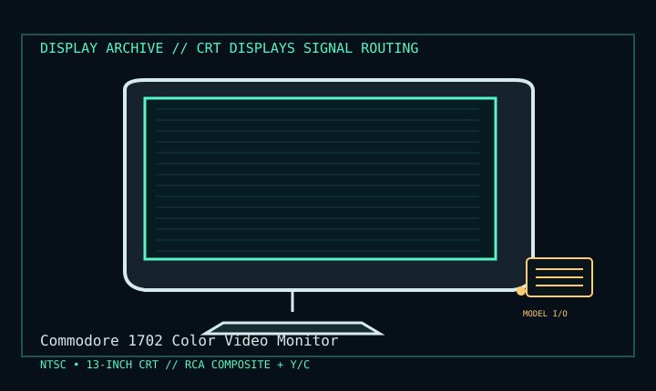

[ INDIVIDUAL COMPONENT // DISPLAY ARCHIVE ]
Commodore 1702 Color Video Monitor
Commodore 13-inch class NTSC color CRT for C64/C128-era video, 1980s.

IDENTIFICATION: Match the exact model suffix, region and installed option boards to the cited manual and rear label. Do not infer electrical compatibility from connector shape.
Model-specific specifications
| Catalog class | Crt Displays |
|---|---|
| Exact product | Commodore 1702 Color Video Monitor |
| Era / purpose | Commodore 13-inch class NTSC color CRT for C64/C128-era video, 1980s. |
| Tube / image | 13-inch class color CRT for standard-definition NTSC video; it has no fixed pixel resolution. |
| Signal formats | 15.734 kHz NTSC/approximately 60 Hz field cadence; image detail is governed by the source’s composite or separated luma/chroma signal. |
| Inputs | Front composite RCA plus rear separate luma (Y) and chroma (C) RCA inputs; audio RCA inputs and front/rear selector on the manual’s described 1702. |
| Power / mechanics | North American 120 V AC set. Tabletop cabinet with front panel access to picture, tint, color, brightness, contrast, hold and volume controls. |
Revision, timing & host compatibility
Use composite for composite sources. Rear luma/chroma is separated video (S-video-like), not analog RGB or modern component YPbPr; use a source that genuinely outputs Y/C. 1702-family regional and production variants must be identified from the label/manual before applying the 120 V assumption.
Before operation, compare source signal type, scan/frame timing, pinout, interface bandwidth, input-board configuration and mains/DC rating against the model-specific manual and nameplate. A listed maximum mode is not a promise of optimum image quality.
Vintage preservation & repair notes
Keep the signal lead and rear/front input selector with the monitor; test composite and Y/C separately, then verify color lock and controls. Record any CRT burn or convergence issue. The set contains hazardous mains/high voltage; internal servicing is for trained CRT technicians.
Record serial/date code, configuration, all installed interface boards, accessories, image condition, calibration state, test source and document edition. Disconnect power before external cleaning and use only the manufacturer-approved procedure; do not open CRT/LCD/OLED equipment without qualified service practice.
Manufacturer manuals & specifications
- Commodore 1702 Monitor User Manual (1984)Commodore-branded user manual scan for input selection, controls and operation.
- Commodore Color Video Monitor Users ManualDigitized original manual containing setup, input and safety instructions.